An idle game about running an electric car factory for a parent company that keeps raising what it takes. The only way to win is to organize.
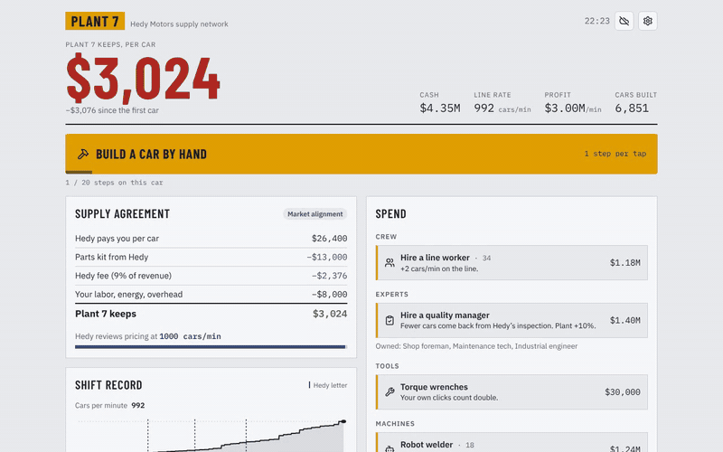
You manage Plant 7, one of nine factories that build electric cars for Hedy Motors. Hedy buys every car you make at a price it sets, sells you the parts kit, and charges a fee on revenue. Hire workers, buy robots, bring in kaizen and kanban, and the line gets faster.
Then the letter comes. Every time Plant 7 crosses a new line rate, Hedy reviews the supply agreement and takes a bigger cut, each time with a reasonable-sounding corporate explanation. Output climbs while the plant's profit per car falls from $6,100 to under $1,000.
Visiting crews from the other plants reveal that everyone gets the same letter after their best quarter. From there the game becomes an organizing ladder: petition, a seat on the allocation committee, a federation of plants, and finally a buyout that turns Plant 7 into a worker co-op selling on the open market.
One line
An idle factory game where the faster your plant gets, the more the parent company takes, until you organize.
Short (50 words)
Hedy Plant is a free browser idle game. You run an electric car factory for Hedy Motors, and every time the line gets faster, Hedy rewrites the deal. Output climbs, profit per car falls. Compare notes with the other plants, organize, and buy your factory out as a worker co-op.
Designed and produced by Permadeath Media, built with the help of AI coding tools. The screenshots and GIF on this page are captures of the game itself.
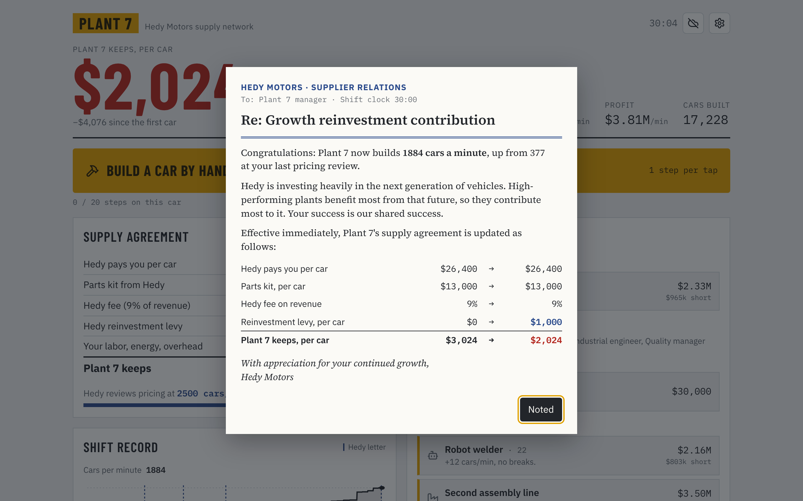
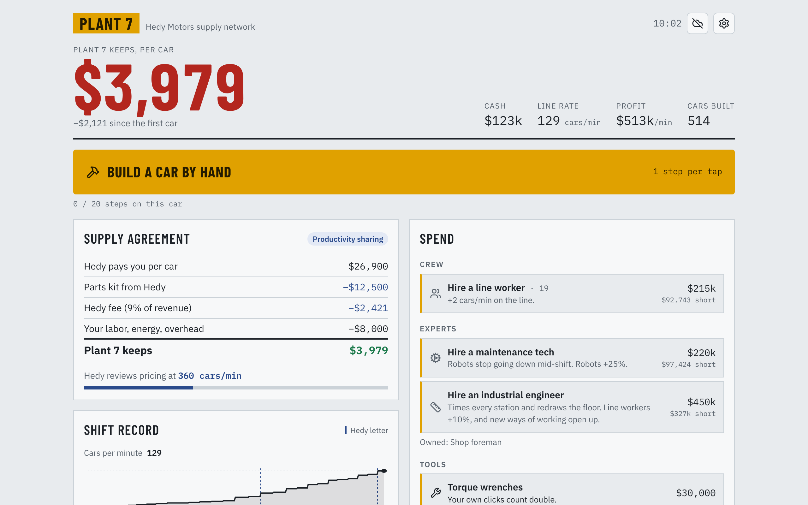
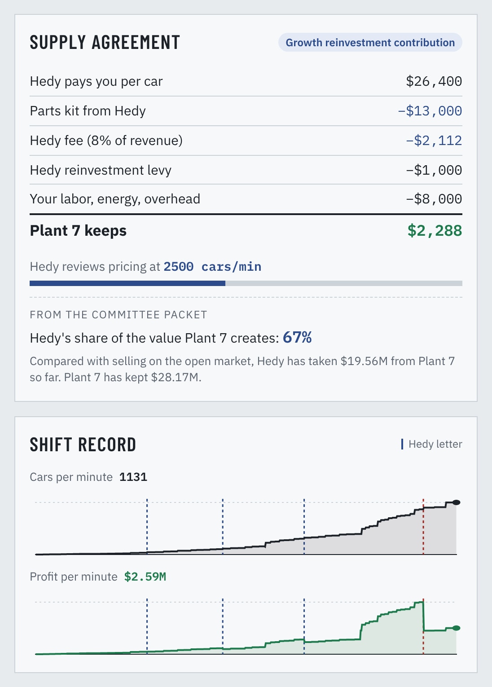
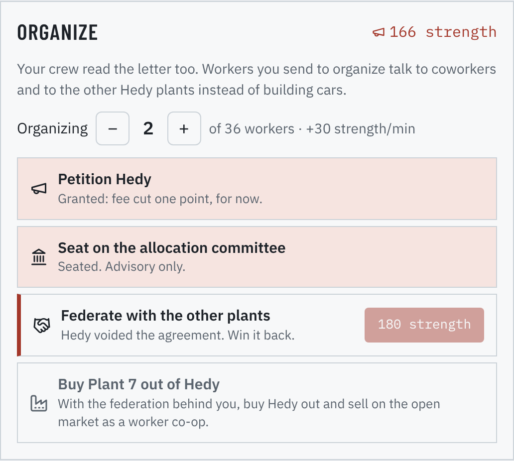
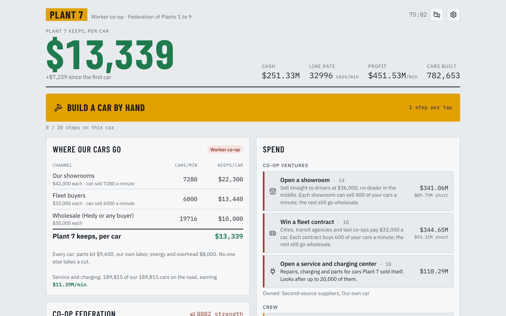
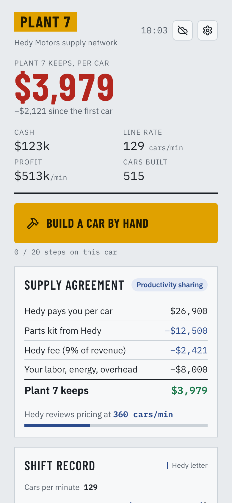
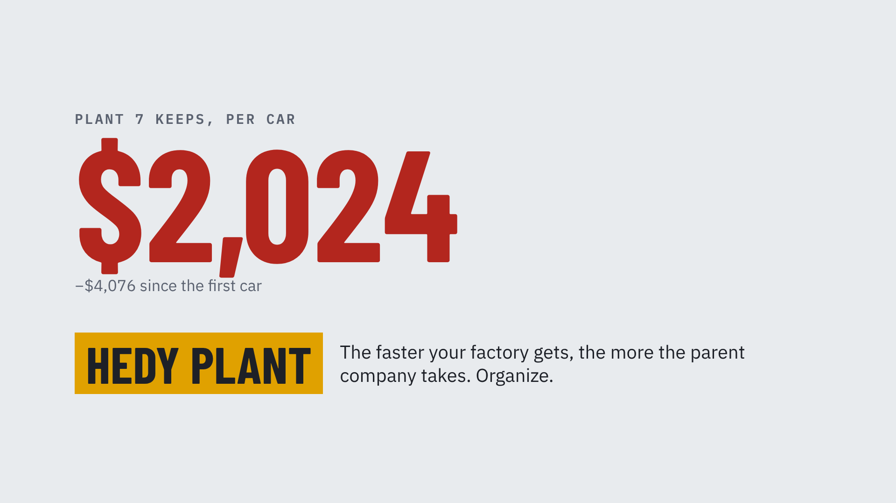
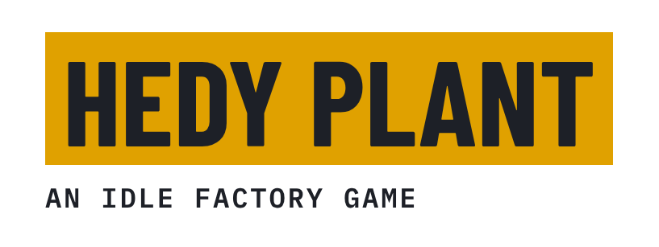
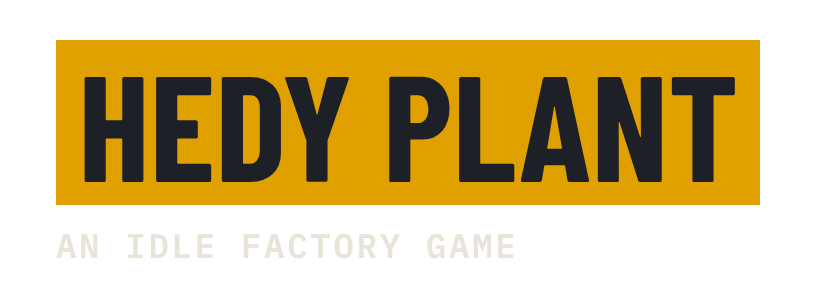
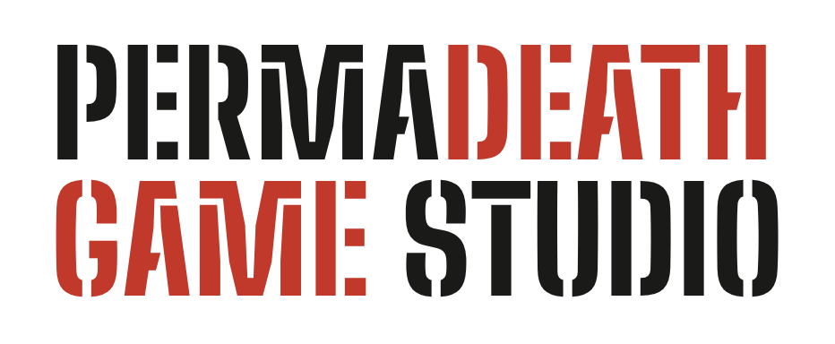
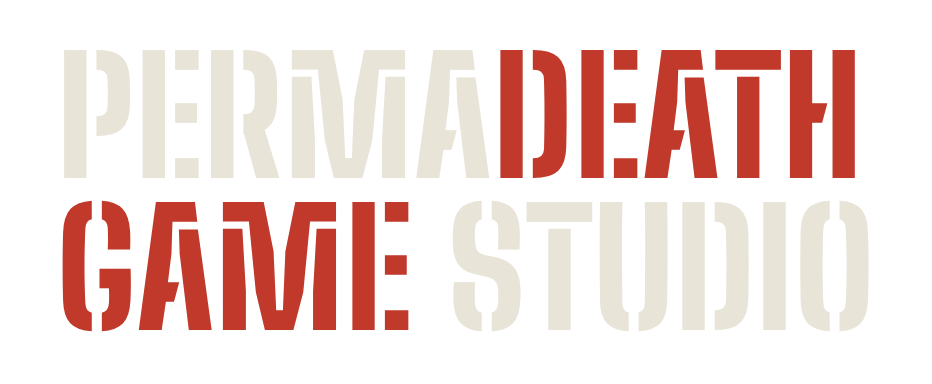
Transparent PNGs. All images on this page may be used in coverage of the games.
Permadeath Media makes games about systems, not villains. Each game puts you inside a structure (a supply chain, a workplace, a commons) and lets you feel how it works. Every game is free to play in the browser.
For coverage, interviews, streaming questions or a build to review early:
Streaming and video of all Permadeath Media games is welcome, including monetized videos. No need to ask.